Dynamic Response Characteristics of More Complicated Processes
목표:복잡한 시스템의 동적 응답을 유도하고 공정 구조(process structure)가 시스템 응답에 미치는 영향을 이해한다.
복잡한 프로세스의 세 가지 대표적 형태는 다음과 같다.
Interacting / Non-Interacting Process (상호작용 vs 비상호작용)
Processes with Dead Time (시간지연 포함 시스템)
Processes with Numerator Dynamics (분자 다이내믹스 포함 시스템)
구조적 형태:
Series (직렬)
Parallel (병렬, inverse response)
Recycle (재순환)
1) Interacting / Non-Interacting Process
Non-interacting:
한 탱크의 출력이 다음 탱크 입력으로만 영향을 줌 (upstream에 영향 없음).
→ 계산은 순차적(sequential) 으로 가능.
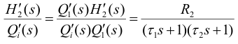
Interacting:
두 탱크 간 유량이 양방향 영향을 주는 경우 (하류 변화가 상류에 영향).
→ 연립방정식으로 동시에 해석해야 함.
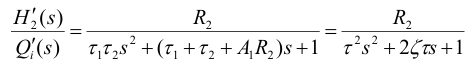
결과:
상호작용 존재 시 시스템이 더 느리게(overdamped) 응답.
탱크 2의 수위가 높아지면, 탱크 1의 유출(q₁)이 억제됨.
→ 즉, 탱크 2가 탱크 1을 “브레이크”처럼 잡아줌.
그래서 전체 시스템이 더 감쇠(damping)된 상태가 되고
→ 진동이 거의 사라지고 응답이 매우 느려짐.
2) Processes with dead time
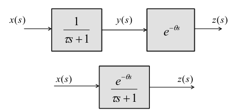 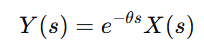
여기서 지연항은 다항식이 아니라 비선형이기 때문에 분석에 어려움을 주고 제어의 안정성을 저하한다. 그래서 이 데드타임 항을 근사할 수 있는 방법이 있는데 파데 근사라고 한다.
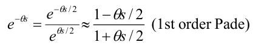
3) Processes with numerator dynamics
Pole (극): 전달함수의 분모 근 → 시스템 고유의 감쇠·진동 성격을 결정
Zero (영점): 전달함수 분자의 근 → 고유 성격은 그대로 두되 응답의 모양 변형.
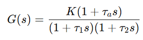 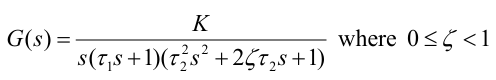
G(S)가 이런형태라고 보자. 여기서 분모근을 폴이라고 하고 분자근을 제로라고 한다. 여기서 분자에 생긴 텀은 최종 정상상태 값 (s->0)에는 영향을 주지 않으나 중간 과도상태에서 영향을 세게 준다.
G(s)에 어떤 응답을 넣더라도, 일단 G때문에 다음과 같은 시간의 함수 텀이 응답 Y에 생기게 된다.
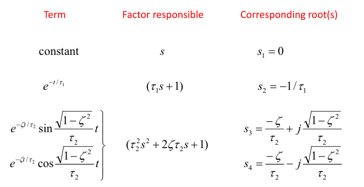
이때 이건 분모의 근이므로 폴이라고 불리는데, 폴들을 좌표에 찍으면 다음과 같다.
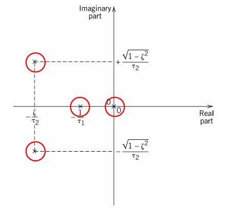
복소수 2개는 감쇠를 의미한다.
0은 상수를 의미하며 적분기로 작동한다.
음수 근은 0에 가까울 수록 더 응답을 느리게 한다.
이제 분자에 근을 추가해보자. 이건 제로라고 부른다.
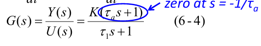
이처럼 분자에 s항이 있을때는 numerator dynamics로 불리며 효과로는 전체 동역학이 폴에만 영향을 받는게 아니라 제로에도 영향을 받게 한다. 이때 시스템 특성(=폴)에는 영향을 주지 않지만 응답의 형태를 바꾼다.
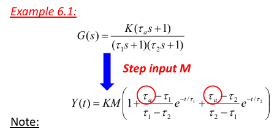
이걸 보면 제로는 K에는 영향을 주지 않았다. 정상상태 이득은 그대로고 응답의 모양(지수텀)도 바꾸지 않았다. 하지만 계수에 영향을 주면서 전개가 바뀌게 만든다.
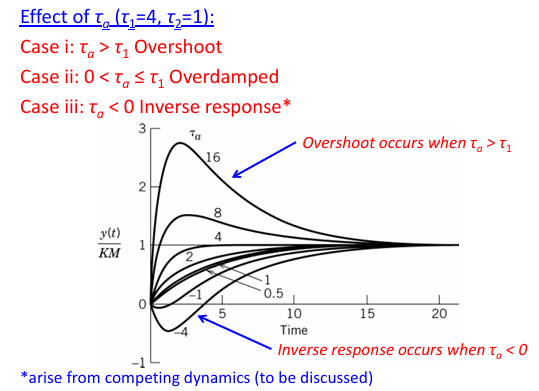
여기보면 분자에 Tas+1항이 추가되었는데, 여기서 Ta값에 따라 댐핑-오버슈팅이 정해진다. Ta가 T1보다 크면 오버슈팅이 생기고 0보다 크면서 T1보다 작으면 오버댐핑이 일어나며 0보다 작으면 역반응이 생기게 된다.
정리해보면 계는 다음과 같은 복잡성 요인이 존재한다.
1.고차계(인터랙션으로 인한)
2.타임 딜레이
3. numerator dynamics
이게 존재할 때, 이를 해석하기 위한 대체적인 전달함수 형태를 고안해보면 다음 2개가 있다.
1. Pole/zero form:
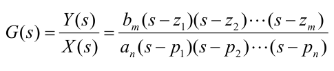
2. Gain/time constant form (전통적인 방식)
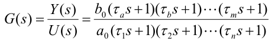
이제 구조적 형태로서 다음 3개를 살펴보자.
Series (직렬)
Parallel (병렬, inverse response)
Recycle (재순환)
1) Series structure (N systems in series)
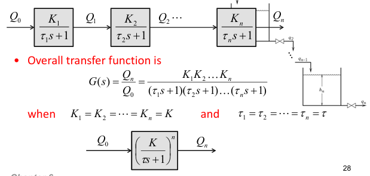 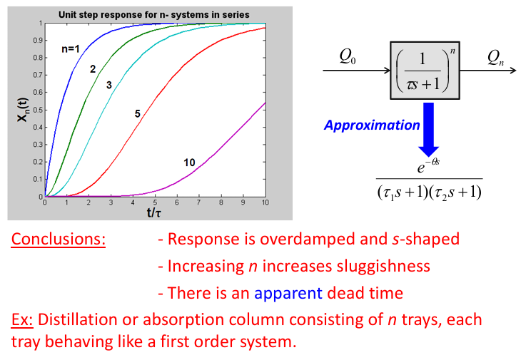
n이 커질수록 더 느리고 S자형으로 보임(겉보기 지연도 느껴짐).
고차(n≥3)는 종종 “등가 시간지연”으로 근사해 해석·설계를 단순화한다. (지연이 들어가면 제어 성능/안정성 해석이 어려워지고 대체로 성능이 나빠짐)
2) Parallel structure (Inverse response processes)
- 서로 부호가 다른 두 1차가 병렬로 합쳐지면, 처음에는 빠른 쪽이 이겨 출력이 반대방향으로 움직였다가, 나중에 느리지만 최종 이득이 더 큰 쪽이 이겨 최종값 방향으로 돌아온다.
- 발생 조건(요약)
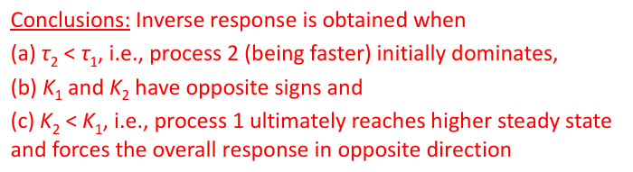
음수쪽이 타우가 작으면 2가 초기에는 빠르기 때문에 밑으로 내려간다. 이때 K1이 더 크면 결국에는 인버스 된다.
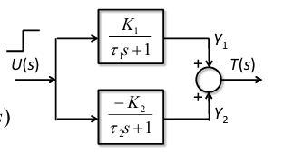
Ta<0인 것으로 해석되도 된다.
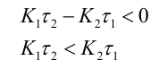
3) Recycle 구조(재순환이 있는 공정)
재순환은 수지·에너지 통합에 필수지만, 동특성을 복잡하게 만들고 외란 민감도 증가·전체 시간상수 증가를 유발할 수 있음.
블록 결합 규칙으로 전체 G(s)를 만들 수 있는데, **재순환 경로가 사실상 “내재적 양(+)의 피드백”**을 만들어 전체 전달함수/거동을 바꾸기도 함.
분모는 시스템의 ‘성격’과 ‘기본 반응 패턴’을 만든다. 분자는 ‘응답의 모양’을 바꾸고 초기패턴을 결정하 장식 역할을 한다.